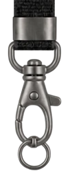

01 / ClinicCase
Portfólio
Emanuel Cândido
2026
Emanuel Cândido — Portfólio de Engenharia de Software
Engenheiro de Software em formação. Construo APIs, sistemas web e interfaces com foco em arquitetura, clareza e uso real.
Arquivos selecionados.
Sistemas, sites, jogos e aplicativos reais — pensados do layout ao código, com foco em quem vai usar. Passe o mouse para abrir cada pasta.
02 / Barbearia
03 / Link na Bio
04 / Eco City
05 / TopNote
06 / NOMA
07 / Terê Burg
Terê Burg — Hamburgueria
Página de links para o Instagram de uma hamburgueria, com horário de funcionamento, cupom e cardápio, e um painel para editar a página e acompanhar visitas, cliques e pedidos de cada canal.
+ / Arquivo
Ver todos os repositórios no GitHub

EmanuelCândido
Engenheiro deSoftware
Engenharia com clareza, consistência e foco no produto.
Sou estudante de Engenharia de Software no Centro Universitário Santo Agostinho (UNIFSA) e desenvolvedor em formação, dedicado a transformar necessidades reais em aplicações confiáveis, organizadas e fáceis de evoluir.
Minha atuação está concentrada em backend com Java e Spring Boot, APIs REST, banco de dados, autenticação, regras de negócio e integração com interfaces modernas. Este portfólio reúne projetos que mostram minha evolução técnica e meu compromisso com código limpo e soluções com propósito.
Java, Spring Boot, PostgreSQL, JPA, APIs REST, JWT, JavaScript, TypeScript, React, Python, Firebase, Android, HTML, CSS, Git e GitHub.
O que eu entrego.
Soluções digitais organizadas, seguras, fáceis de manter e preparadas para crescer.
-
01
Backend & APIs
APIs REST com autenticação, validações, regras de acesso e organização em camadas.
-
02
Banco de dados
Modelagem de tabelas, relacionamentos, consultas SQL e integridade pensada desde o início.
-
03
Interfaces
Telas modernas e responsivas, com foco em clareza, usabilidade e experiência visual.
-
04
Versionamento
Projetos organizados no GitHub, com branches, commits claros e repositórios mantidos.
Arquitetura em camadas
Controllers, serviços e repositórios com responsabilidades claras.
Dados bem modelados
Relacionamentos e consultas pensados para sistemas reais.
Interfaces com propósito
Clareza, usabilidade e responsividade em cada tela.
Artigos e eventos.
Pesquisa, apresentações e formação complementar. Três desses trabalhos nasceram do ClinicCase.
-
Ago 2026
DELTA SAÚDE 2026
5º Congresso Internacional de Estudantes e Profissionais da Saúde — painel eletrônico do trabalho “Plataforma Inteligente para Geração de Casos Clínicos com Inteligência Artificial”.
Certificado Banner -
Jun 2026
Opala Tech V
IFPI Campus Pedro II — artigo sobre a arquitetura LLM + RAG do ClinicCase: API orquestradora em Spring Boot, gateway para múltiplas LLMs, banco vetorial e feedback formativo.
Certificado Artigo -
PIBIC
Iniciação científica — UNIFSA
MVP do ClinicCase: um caso clínico completo gerado em 15 a 25 segundos, editável, mantendo o professor no controle da versão final.
-
Extensão
Git e GitHub na prática
Curso de extensão sobre controle de versão e colaboração — Centro Universitário Santo Agostinho.
Extensão
Vamos conversar?
Aberto a projetos, oportunidades, parcerias e conversas sobre desenvolvimento. Comunicação direta, simples e objetiva.